Projects
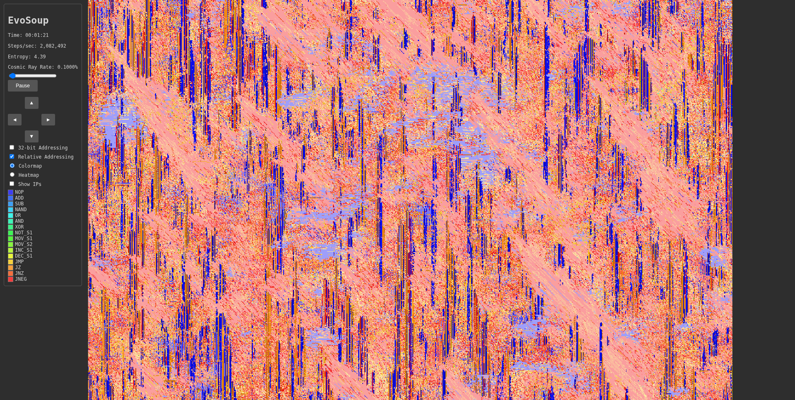


Neuromusical Cellular Automata
Play piano to explore the space of Neural Cellular Automata. Each note samples a latent space which a hypernetwork transforms into NCA parameters, generating beautiful self-stabilizing visual patterns in real time.
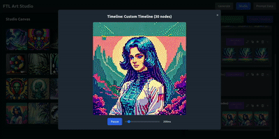
FireLighT
A creative tool for generating and manipulating AI imagery. Generate random images from dynamic prompts, curate them for training data, and create smooth animations via latent space interpolation with Stable Diffusion.
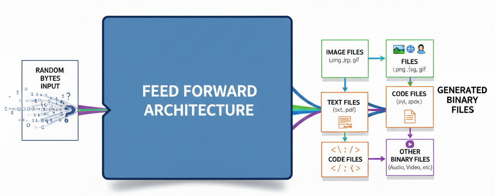
GRACE: Generative Reinforced Autodidact Contrastive Encoder
A non-autoregressive byte-level generative multimodal model that aims to produce KB of data of any type in a single forward pass. An entirely new approach — not a diffusion model, not a GAN.
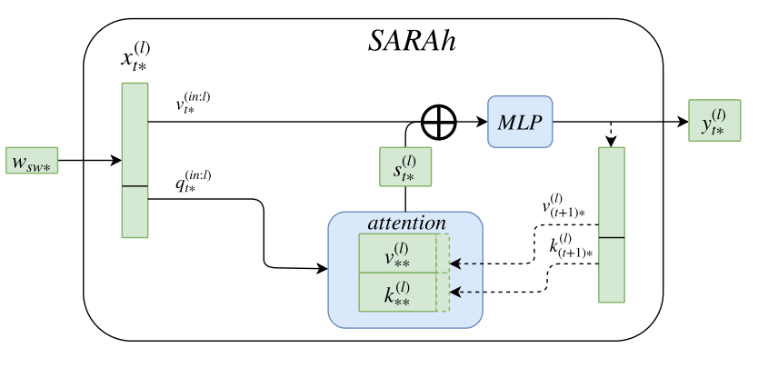
Unsupervised Paraphrase Generation (SARAh)
Paraphrase generation from scratch with no supervised training examples. The SARAh architecture (Self Attentive Recurrent Array) requires fewer parameters than RNNs or Transformers with hierarchical representations from characters to sentences.
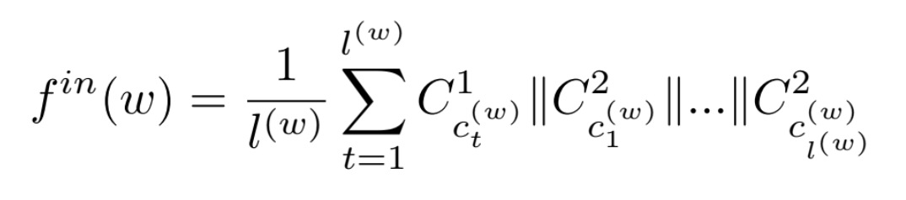
Words Are Not Temporal Sequences of Characters
Word embeddings from non-sequential character representations. Improves hierarchical language modeling performance over SOTA at the time while using fewer parameters.
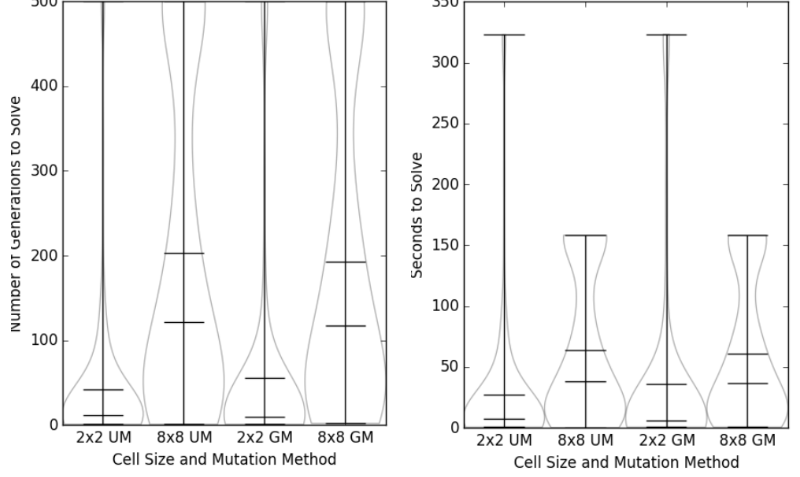
CUDA Based Evolutionary SAT Solver
A hybrid genetic algorithm plus local search for solving boolean satisfiability problems in CUDA. Improves over previously published algorithms using concurrent CPU/GPU operations and a new mutation strategy.
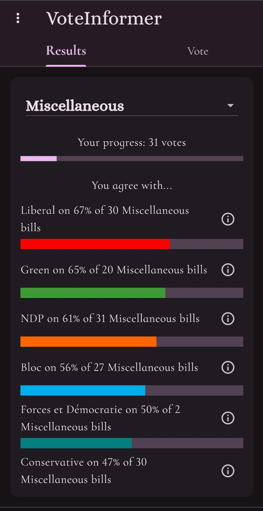
Voteinformer
A civic engagement app helping citizens stay informed and engaged with their democratic process.
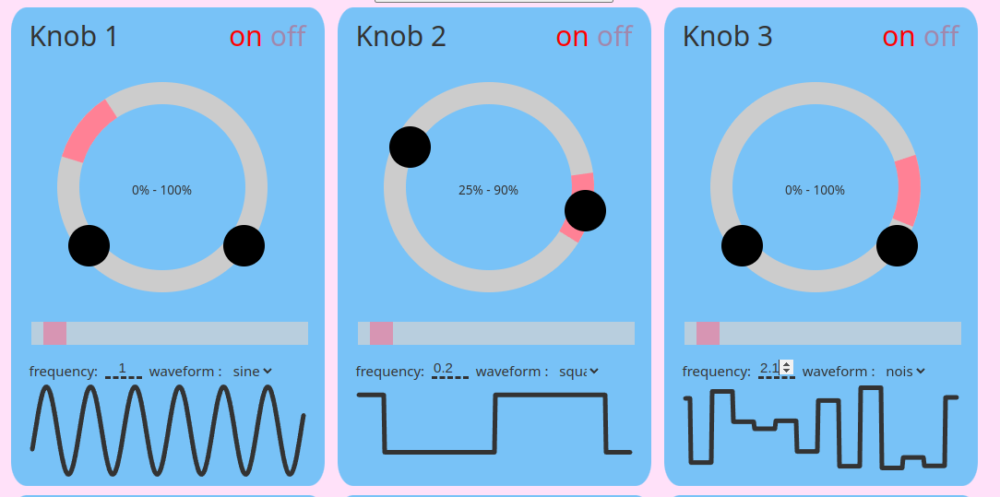
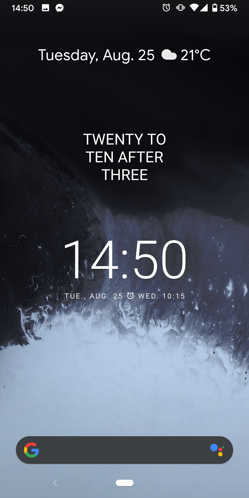
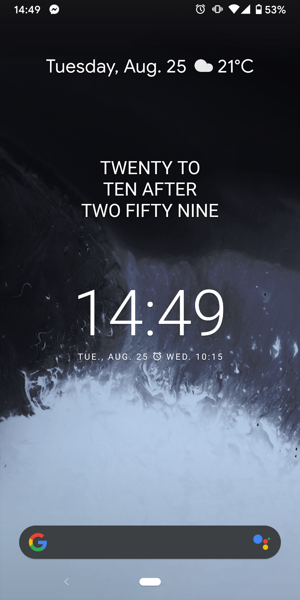
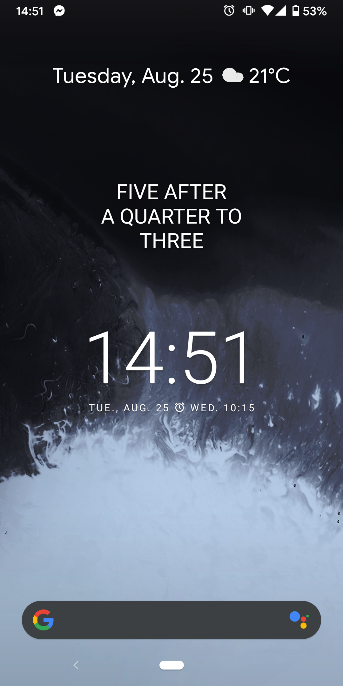
Awkward Clock
Android app that tells the correct time in a confusing way. Why say "ten after four" when you could say "twenty to half-past four" or "a quarter after five to four"?
Open Source Contributions
Added support for a sampled version of sparse softmax cross entropy loss.